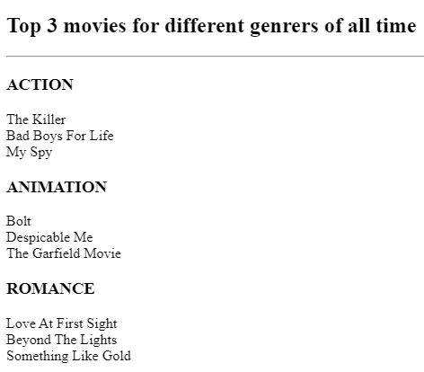

IKENNA'S PORTFOLIO
I'm a Web Developer
Below are some websites i've created within the past few weeks.
My Movie Ranking Website

Then I also did a website for a Birthday Invite
My Birthday invite
ABOUT ME
CONTACT ME